朝代·性别·官职·地理
从CBDB数据库中提取数据，从多个维度透视历史人物群体的宏观结构。用数据看见历史。
CBDB数据库中，清代记录的人物数量最为可观。这一现象并非偶然，而是与历史记忆的保存机制密切相关——清代距今较近，文献档案遗存更为完整，地方志、家谱、文集等史料的大规模编纂与刊印，使得这一时期的人物信息得以系统性留存。同时，清代作为传统王朝体系的集大成者，其官僚制度、科举体系与社会网络的复杂程度，也为人物传记的生成提供了丰厚的土壤。
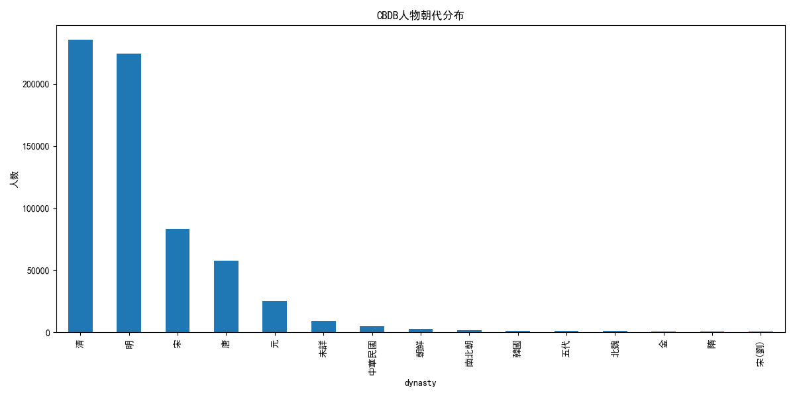
一个反直觉的发现是：明代有传记记录的女性占比，在历代中反而居于高位。传统史学通常认为唐宋社会风气更为开放，女性活动空间相对宽广，然而数据呈现出的却是另一番图景。
这一现象的实质，并不能直接说明明代女性享有更高的社会地位或更大的行动自由，而是文献保存的结构性偏差在数字层面的显现。明代印刷出版业的空前繁荣，催生了大量女性文学创作（闺秀诗集）与道德传记（烈女传）的编纂刊刻；加之地方志修撰的制度化，使得女性——尤其是符合儒家伦理规范的女性——被前所未有地纳入文本记录体系。相比之下，唐宋女性的多元面貌因缺乏系统性的文本记载无法可视化。
这一发现提醒我们：数据库中的"历史"，首先是"文本中的历史"。数字人文研究若仅停留在数据表面的统计，而忽视史料生成的社会机制与权力结构，便可能陷入"用数字证成偏见"的陷阱。
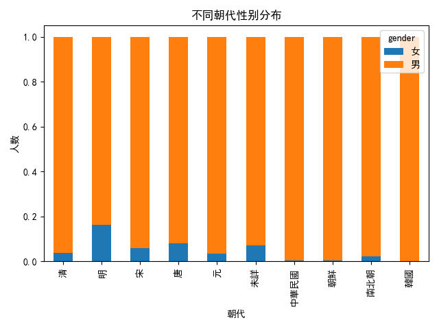
官职记录的整体格局与朝代人数分布基本保持一致。
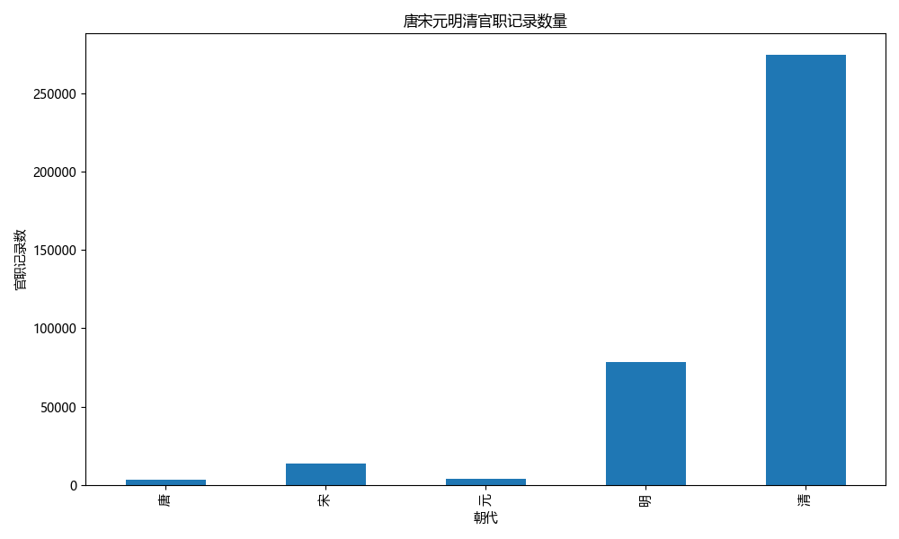
散点图基于CBDB中的经纬度信息与中国历史地理底图绘制，直观呈现了人才来源的空间广度。从中可见，唐代、元代与清代均有人才来自新疆等边疆地区，清代更延及台湾——这与各朝代的疆域拓展、边疆治理及民族交往的历史实况高度吻合。展示数据在空间维度上与历史的映照作用。
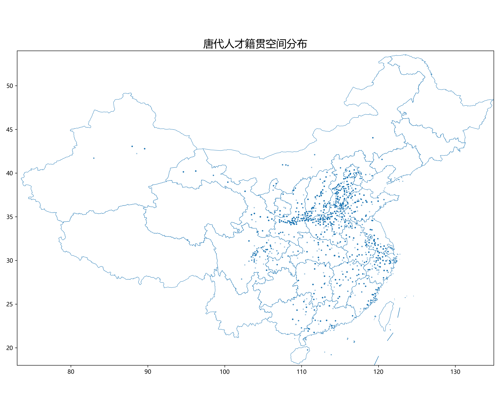
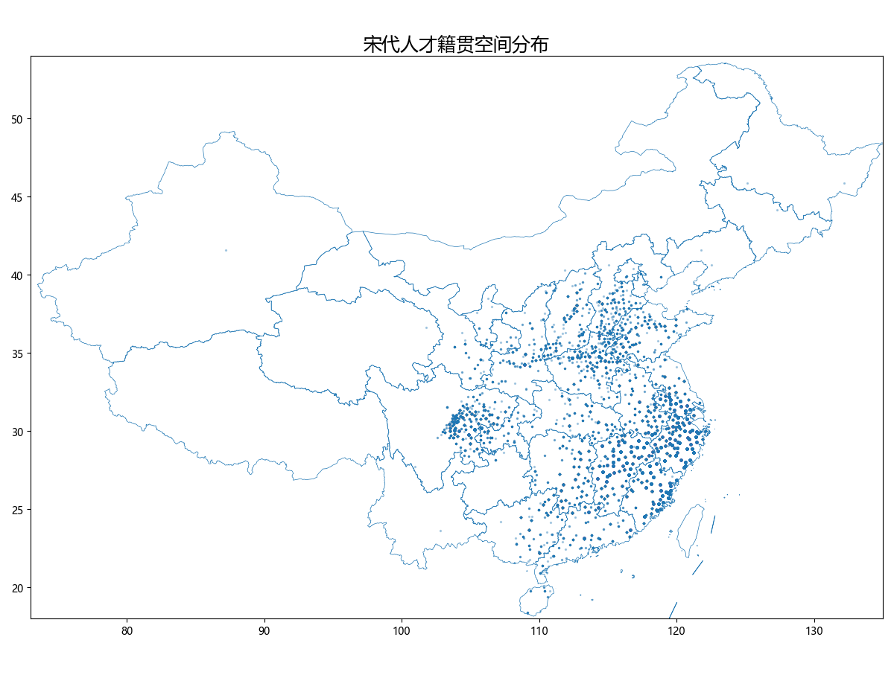
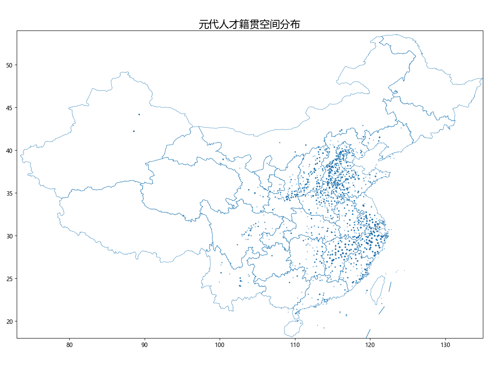
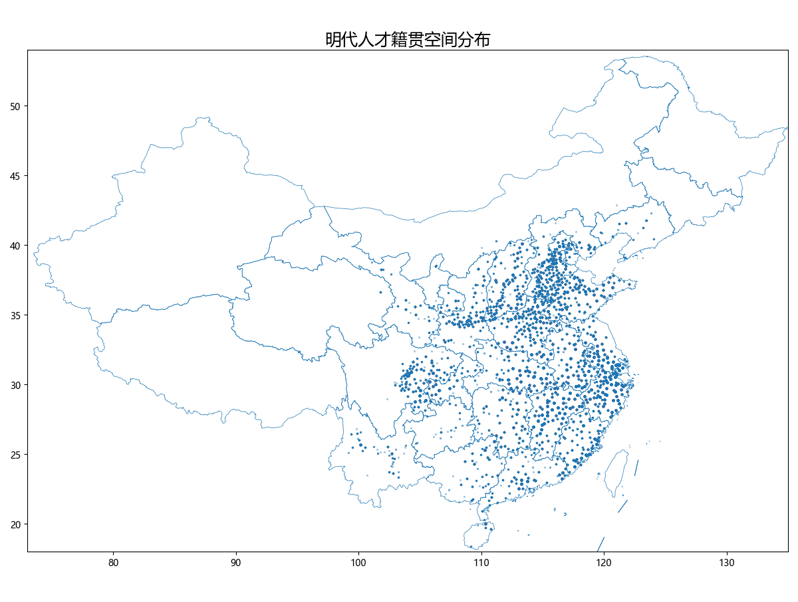
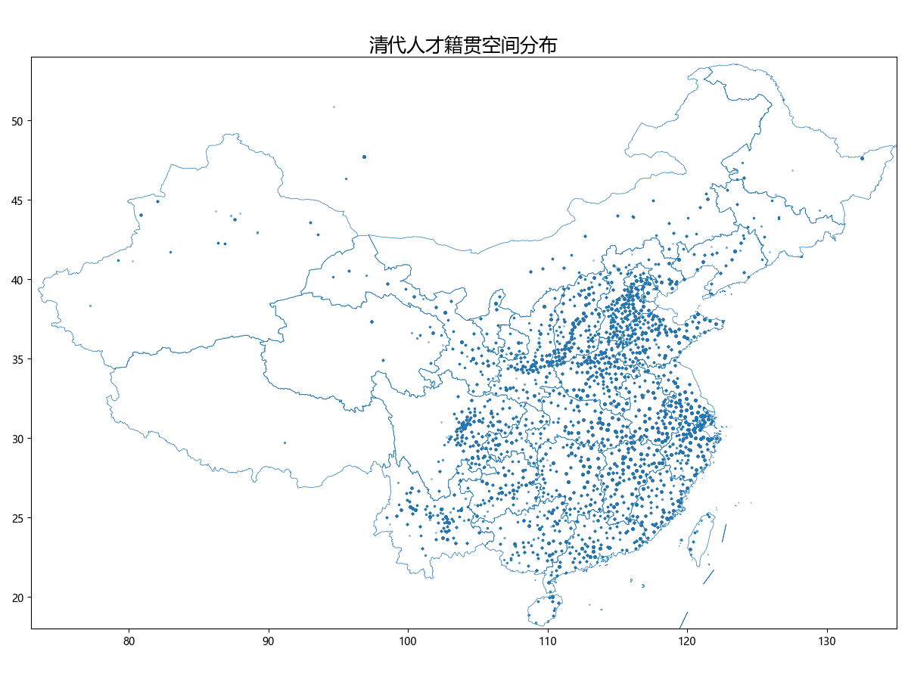
热力图则采用核密度估计（KDE）方法，以替代早期六边形分箱（hexbin）方案。后者因视觉碎片化、信息密度不足而被弃用。KDE热力图清晰揭示了人才分布的集聚格局：高密度区域与历代政治、经济中心高度重合。
以明代为例，热力图呈现出双中心结构——北方北京是政治中心，江南地区则是经济中心，朝廷靠大运河把江南的钱粮源源不断运往北京，政治权力和经济命脉南北分治的局面在明朝达到顶峰。数据的空间可视化让这种历史结构一目了然。
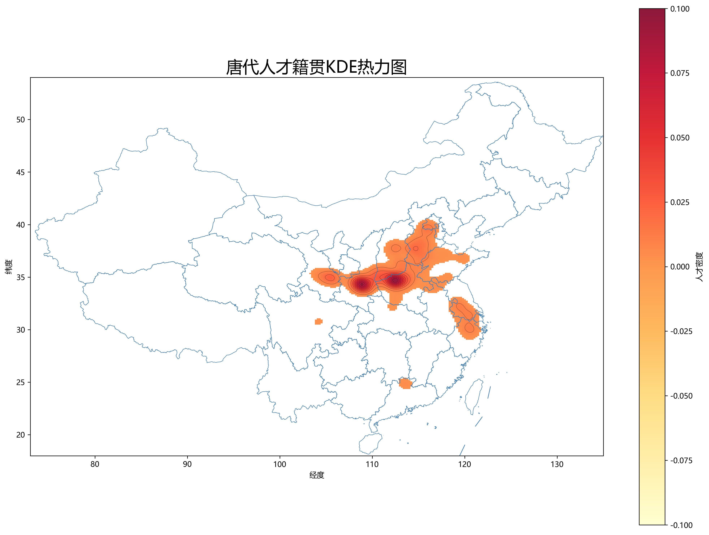
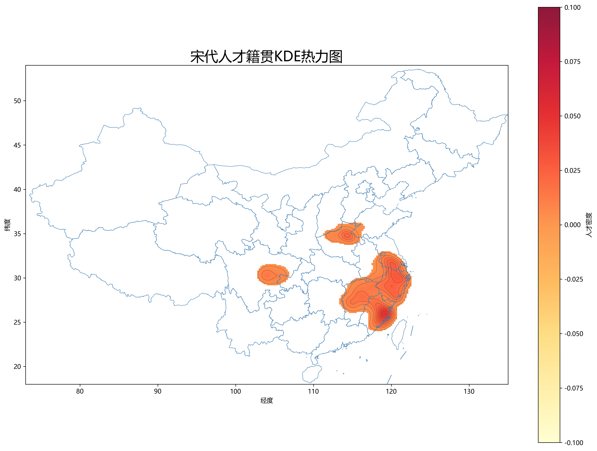
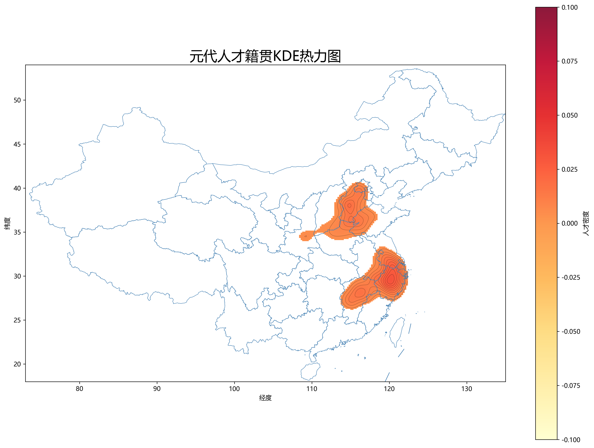
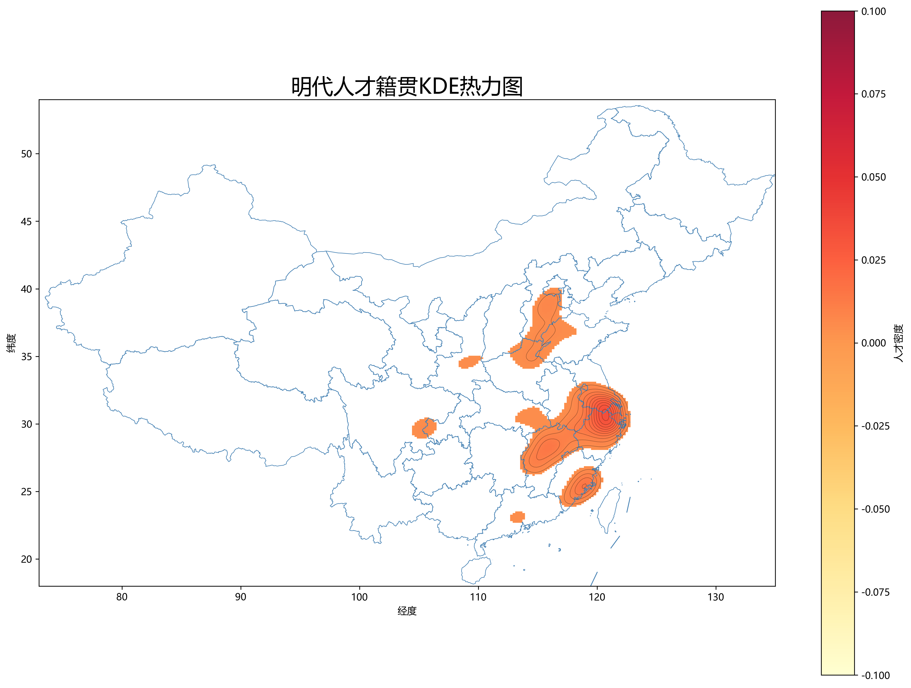
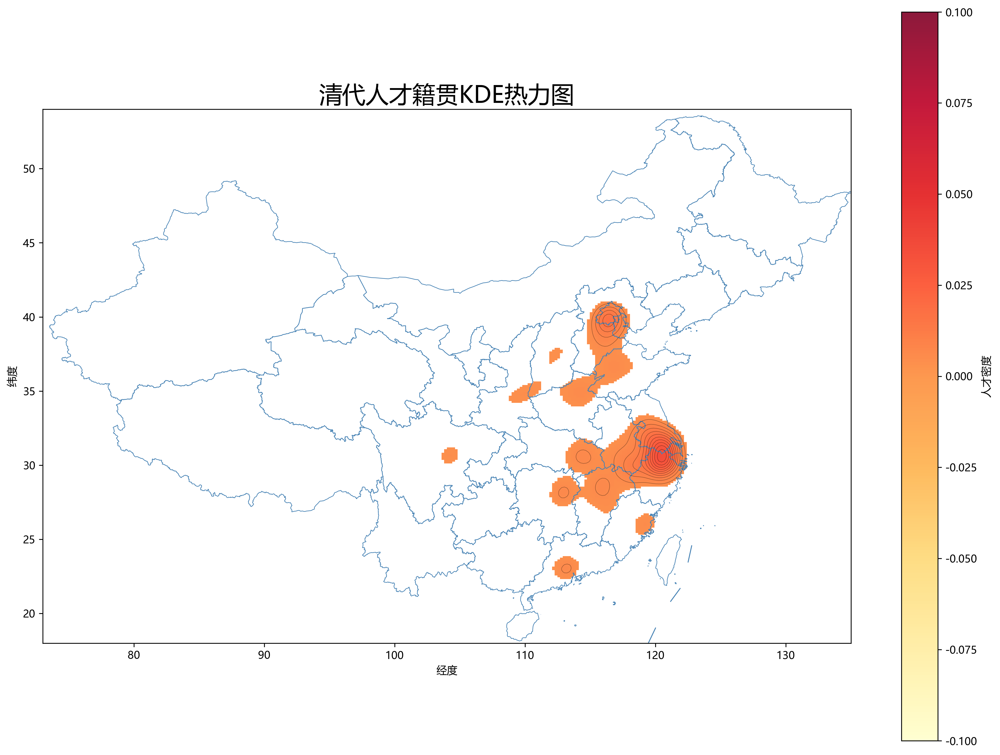
个案追踪与南宋迁徙
靖康之变后，南北宋的更迭不仅是一场王朝革命，更是一次大规模的人口迁徙。从李清照的个人流亡到南宋群体的空间重构，数据揭示了同一段历史的两个刻度。
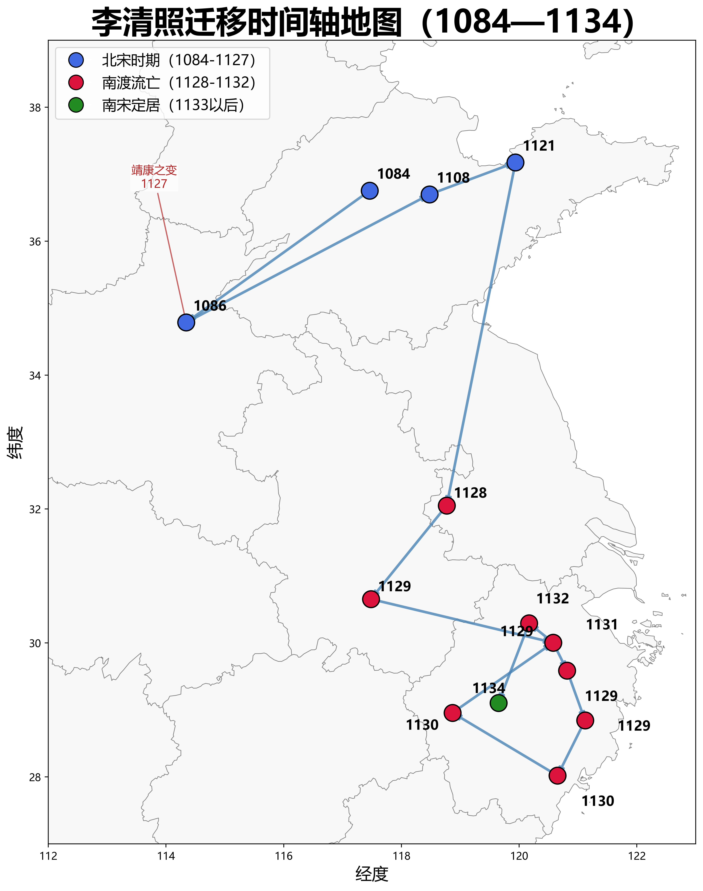
红色区域为籍贯地热力中心、蓝色区域为最终活动地热力中心
对比籍贯地与最终活动地的热力分布，可见显著的空间位移：
籍贯热力中心：集中于黄河中下游——开封府、河南府、济南府一带，即北宋的核心文化区。
最终活动地中心：转移至长江下游——临安府、平江府、建康府、绍兴府等地，形成南宋的政治经济新重心。
这种空间重构，与李清照的个人轨迹高度吻合：从北方故土到江南新居，从汴京繁华到临安偏安。个体的流亡记忆，也是群体的历史洪流的印证。
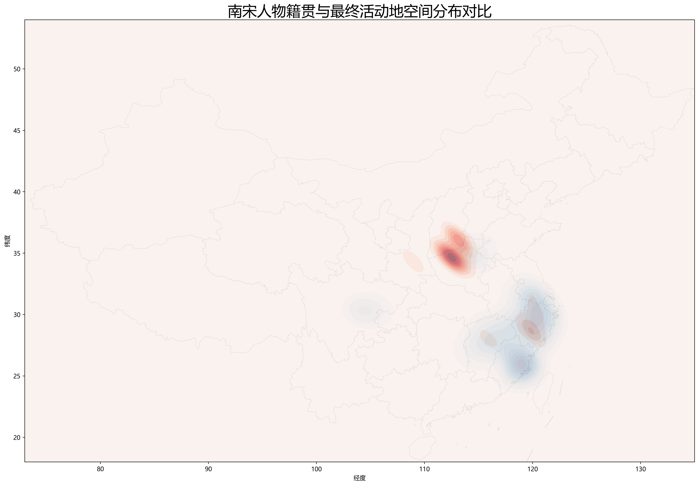
原本的方案是将李清照的个案方法推广至整个南宋群体，但遇到了许多问题。
第一层困难：材料丰寡悬殊。李清照作为文学史上的标志性人物，其生平记录之详尽，远非普通南宋士人可比。CBDB中多数人物仅有籍贯与零星任职地，缺乏连续的活动轨迹。试图复刻李清照式的个体迁移图，对绝大多数人物而言并不现实。
第二层困难：地点关系的复杂性。数据库中人物与地点的关联，涵盖籍贯、出生地、任职地、活动地、卒地等多种类型。若不加区分地将所有地点串联为迁移路线，实则混淆了不同性质的空间关系，导致路径失真。
第三层困难：时间维度的缺失。多数人物仅有地点记录而缺乏精确年份，无法建立如李清照般清晰的时间轴。
面对上述局限调整了研究策略：放弃个体路线的精确复刻，转向群体层面的空间对比。具体而言，提取南宋人物的籍贯地（代表其来源）与最终活动地（代表其归宿），分别生成热力图，再将二者叠加对比。
这一方法虽牺牲了个体轨迹的精细度，却揭示了群体层面的宏观迁移格局：北方籍贯的密集分布，与南方最终活动地的热力集聚，构成了南宋人口南迁的直观证据。籍贯地与活动地的空间错位，正是靖康之变后北方士人南渡的数字化印记。
史家如何看待清河崔氏的长期影响力
从数据库中看到了什么？
数据库呈现的是广泛分布于整个官僚体系的庞大群体， 而非少数权力顶峰人物。这与传统史学的顶层视野形成了有趣的对照。
聚焦顶层精英：宰相、尚书令、中书令等权力顶峰人物
叙事模式：以重要历史人物串联门阀兴衰
史料来源：正史列传、碑铭墓志
优势：深度理解个体与事件的关系
呈现官僚网络：知县、州官、学官等各级成员
叙事模式：以群体分布和统计规律揭示结构
史料来源：CBDB数据库的人物与官职记录
优势：发现被传统叙事忽略的群体面貌
如果说传统史学关注的是门阀家族的"高度"， 那么数据分析看到的则是门阀家族的"厚度"
传统史学倾向于以重要人物为线索来书写历史。这种方法固然能够深入理解个体与事件的关系，却也容易让读者忽略那些"不出名"的历史参与者。普通官员、基层士人、边缘人物——他们虽然不在史书的聚光灯下，却构成了历史运行的基本骨架。
CBDB数据库的价值，恰恰在于它让我们有机会跳出"名人中心"的叙事框架，从总体结构的角度重新观察历史。当我们不再只关注宰相而开始关注知县时，一幅全新的历史图景便浮现出来：门阀政治的真正力量，或许并不完全取决于顶层精英的作为，而在于整个官僚网络的结构性延续。
数据驱动的历史研究，并非要取代传统史学，而是提供一种补充视角。当大量普通家族成员进入分析视野时，我们能够看到传统叙事难以捕捉的结构性特征：哪些官职类型最为集中？哪些地理区域持续输出人才？联姻网络如何维系跨代际的政治联盟？
这些问题的回答，不需要依赖对个别人物的深度解读，而可以通过数据的统计分析获得。正是这种"从个体到群体、从精英到结构"的视角转换，构成了数字人文对历史研究的独特贡献。
门阀政治的力量
不仅存在于权力顶端
更存在于整个官僚网络之中
以CBDB中的苏轼为例
从人物到数据
通过CBDB数据库，探索中国历史人物的数字化重建过程。
China Biographical Database，由哈佛大学、北京大学、中研院等联合构建。收录从西汉到清末超过 65万 位历史人物的传记信息。
CBDB把每位历史人物的信息拆解为结构化字段——姓名、生卒年、籍贯、科举、官职、亲属、社会关系——以便计算机能够分析。
通过结构化数据，研究者可以跨越单个人物传记，发现群体性历史规律：人才地理分布、家族兴衰轨迹、社交网络演化模式。
从传统史书中的文字到数据库字段。
苏轼应进士举，以一篇《刑赏忠厚之至论》震动文坛。主考官欧阳修以为得意门生。
通过"贤良方正能直言极谏科"制科考试，授大理评事、签书凤翔府判官，正式步入仕途。
以BIOG_MAIN表为核心，向外辐射到各专题数据表。
从人物到数据，从数据再回到历史
一切皆数，一切皆算
看到这个选题的时候，我立刻想到了老师在课上提出的「一切皆数，一切皆算」的观点。这让我产生了浓厚的兴趣，也开始思考：历史究竟如何被数据化？
在此之前，我对于历史研究的理解更多停留在课堂学习与文献阅读层面。但如果人物、官职、迁徙、社会关系都能够被记录为数据，那么这些数据之间是否能够重新拼接出一个历史世界？我们是否能够通过统计、空间分析和网络分析等方法，从新的角度理解历史？
带着这样的好奇，我选择以 CBDB 数据库为研究对象，希望尝试用数据的方式重新观察中国历史人物。
项目架构设计、数据分析代码生成、可视化方案设计、Agent 提示词优化
部分数据分析模块完善、项目文案优化，尤其在历史叙事和数字人文表达方面
除少量细节修改外，整个网站前端结构、交互逻辑以及视觉实现均由 Codex 完成
最开始只是在做北宋文人交往网络时感到确实需要vibe coding一个网站。但随着数据量不断增加，我发现自己获得的成果已经远远超过一张关系图。人物统计、迁徙地图、社会网络、家族分析……这些内容彼此关联。
如果使用 Word，内容会显得杂乱厚重；如果使用 PPT，则需要大量重复排版工作。但是我突然想到：
网站本身就是一种知识组织方式。
它不仅能够展示结果，更能够构建一条完整的叙事路径，引导读者逐步理解数据、理解历史。因此项目最终转向数字人文网站的形式。
很多时候我的想法原本十分简单，但在与 AI 讨论过程中，方案会迅速膨胀。功能越来越多，页面越来越复杂，最终反而容易偏离最初的想法。
AI 在使用过程中仍然需要不断检查和修正。项目中最常见的问题是代码报错，很多时候 AI 生成的代码无法直接运行。
很多问题并不是模型能力不足，而是需求表达不够清晰。例如希望获得图片提示词，AI 可能理解成直接生成图片。
数据库中的「关系」并不完全等于现实中的社会关系。为某人作传、写碑文、引用作品——这些记录都会产生连接，所以在文人关系部分需要清洗大量的数据。
数据量最大的记录并不一定对应历史上最重要的人物。历史重要性受多重因素影响。
我觉得真正重要的并不是图表本身，而是图表是否能够回答问题，所以最终删去了很多复杂但意义不大的内容。
很多历史现象需要制度背景、历史语境、文本材料共同参与解释。数据分析无法替代历史学本身。
Agent 并不是万能的。细小的 Prompt 错误就可能导致整个页面被重构。许多 Bug 仍需人工排查。
由于时间比较紧张，没有对网站进行更精细化的设计。
历史也可以不止是静止在书页里的文字。
在一次次数据清洗、统计分析和可视化的过程中，第一次真切感受到：历史并不是静止在书页里的文字。
当数十万条人物记录被连接起来时，一个庞大的历史世界开始浮现。
我们能够看到人才如何流动；能够看到家族如何延续；能够看到文人之间如何交往；甚至能够看到一个朝代的文化与政治网络如何逐渐形成。
那些原本分散在史书中的人物，仿佛重新获得了联系。而数据，则成为了连接这些人物的新桥梁。
当然，数据永远无法完全还原历史。它会遗漏，会偏差，会受到文献保存状况的影响。
但正因为如此，数字人文的意义并不在于取代传统历史研究，而是在于为我们提供一种新的观察方式。
它让我们有机会从宏观尺度重新审视历史，也让我们能够在浩瀚史料之中发现那些过去难以察觉的联系。
从某种意义上说，这个项目真正吸引我的，并不是「把历史变成数据」。
而是在数据之中，重新看见历史。
历史并不是静止在书页里的文字。
当数十万条人物记录被连接起来时，
一个庞大的历史世界开始浮现。
我们看到人才流动，
看到家族延续，
看到文人交游，
也看到历史留下的痕迹。
在数据与历史的交汇之处，
这些原本分散的记录呈现出新的结构与意义，，
为我们提供了一种重新理解历史材料的方式。
基于 CBDB 数据库的数字人文探索
2026